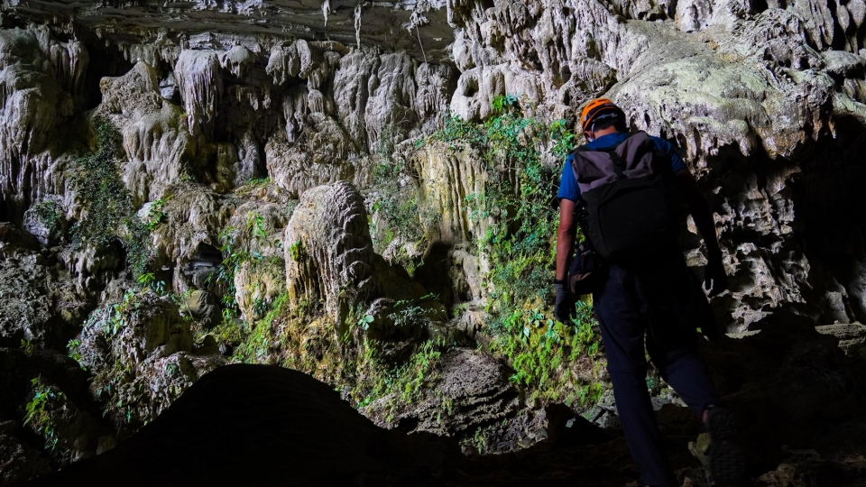
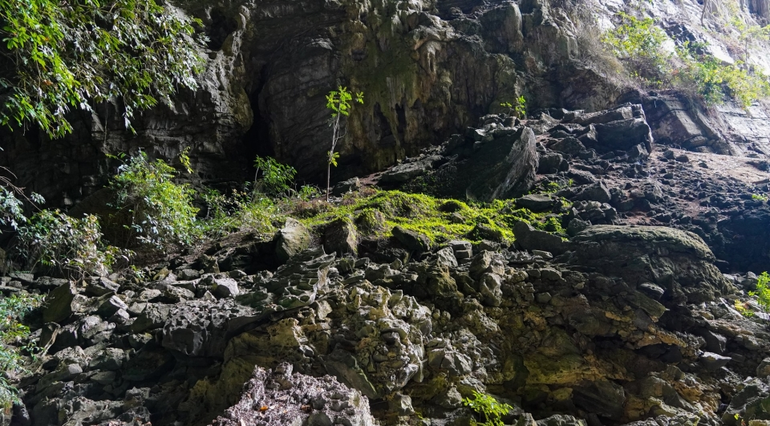
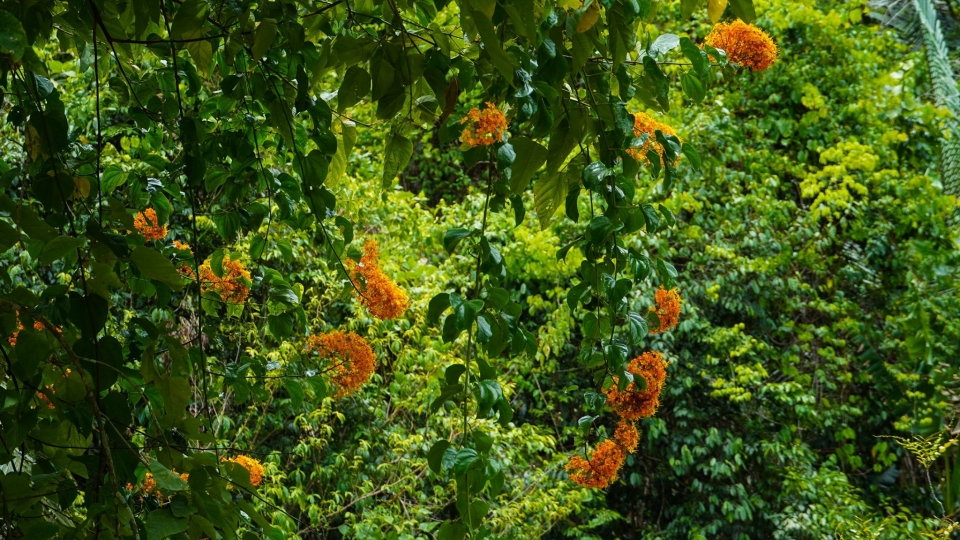

Trekking Quảng Bình – Review tour hang Tiên
Tình hình quá lâu ko cuốc bộ đi đâu nên đợt đi có việc ở Hà Nội mình đã quyết định bắt tàu ra Quảng Bình để kiếm 1 cung trekking nào nhanh gọn lẹ luyện lại đôi chân, cũng như test mấy bộ đồ đã hốt từ decathlon. Bạn nào đi trekking Quảng Bình mà chưa có chốt đc tour nào thì có thể xem để tham khảo nhé
TREKKING QUẢNG BÌNH – RẤT NHIỀU TOUR HANG
Sau nhiều màn tư vấn của các nhiệt tình viên ở Quảng Bình, cuối cùng mình chọn Hang Tiên để đi và đương nhiên ai cũng biết Hang Tiên thuộc quyền khai thác của ai rồi (đó là công ty Oxalis). Hang Tiên có nhiều cấp độ: 1,2,3 tương ứng với số ngày. Mình đi Hang Tiên 1 tức là 1 nên đi về trong ngày phù hợp tới thời gian, kinh phí đề ra.
HANG TIÊN 1 TRONG NHỮNG CUNG TREKKING Ở QUẢNG BÌNH GIÁ HỢP LÝ
Tổng quảng đường đi và về tầm 10km, trong đó bao gồm 7km đường rừng, và 3km ra vào trong hang nói chung đi trekking Quảng Bình thì chủ yếu đi rừng sau đó vào hang đi 1 đoạn ko dài lắm. Về chặng đường rừng thì cũng không có gì khó lắm, chỉ 1 vài con dốc nhỏ nhưng thời tiết miền trung khá nóng và hôm mình đi có mưa, nóng và ẩm ướt đi trong rừng bao phủ toàn cây không có miếng gió nóng kinh khủng nóng. Nhưng đổi lại thì cây xanh mát mắt, trên đường đi lại gặp bé rắn nghe ai porter bảo rắn đó độc, nó màu xanh nguyên 1 đoàn ko ai nhìn thấy mỗi anh porter nhìn thấy, rồi dụ mình vào quay film… sợ muốn chết mà vẫn quay hehe.
